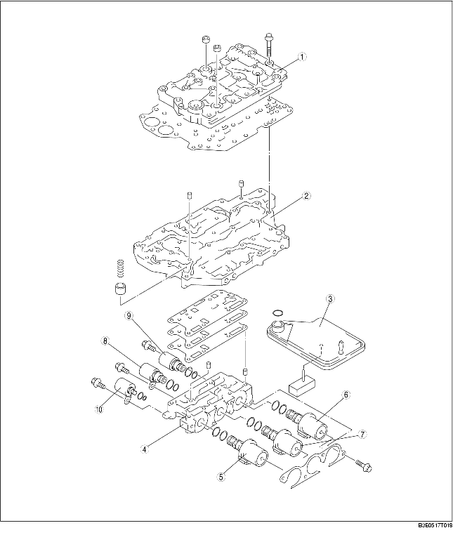

• Il corpo della valvola di controllo è composto da tre parti: il corpo superiore della valvola di controllo, il corpo principale della valvola di controllo e il corpo della valvola di controllo dell'elettrovalvola.
• Dato che la pressione di innesto della frizione è controllata elettricamente, i circuiti idraulici sono semplificati, i tipi di valvola ridotti e il corpo della valvola di controllo è miniaturizzato.
• Il filtro a reticella dell'olio in tessuto non intrecciato è installato nel corpo della valvola di controllo per evitare contaminazioni.

.